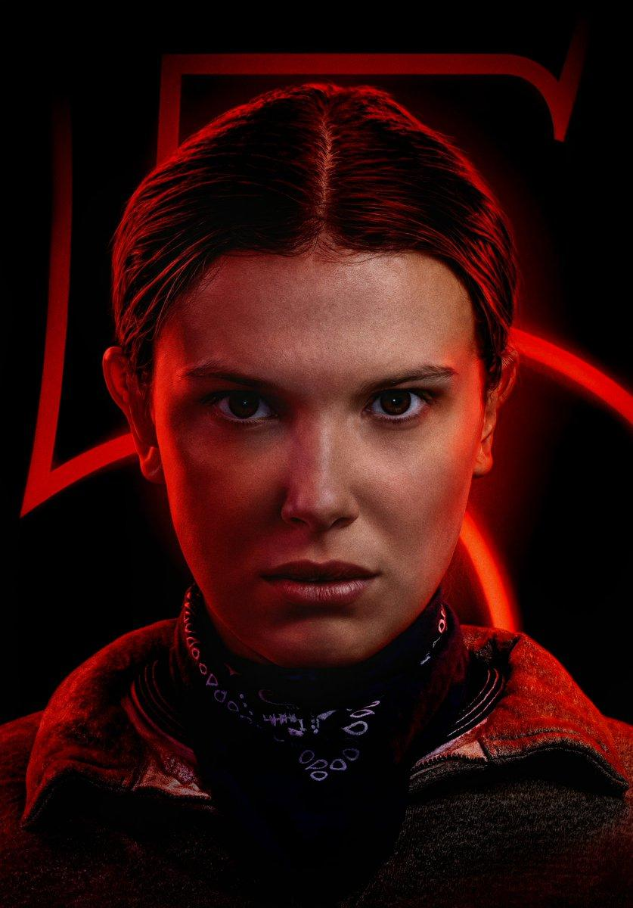
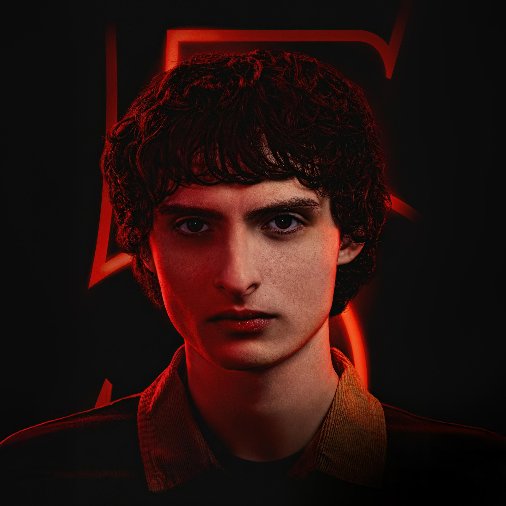
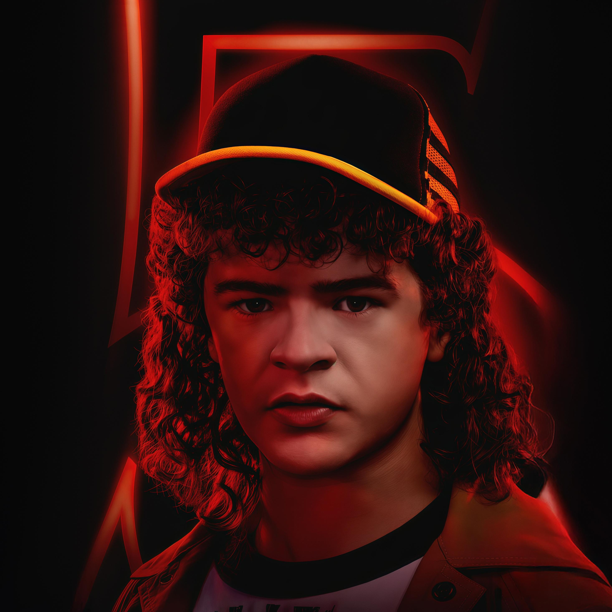
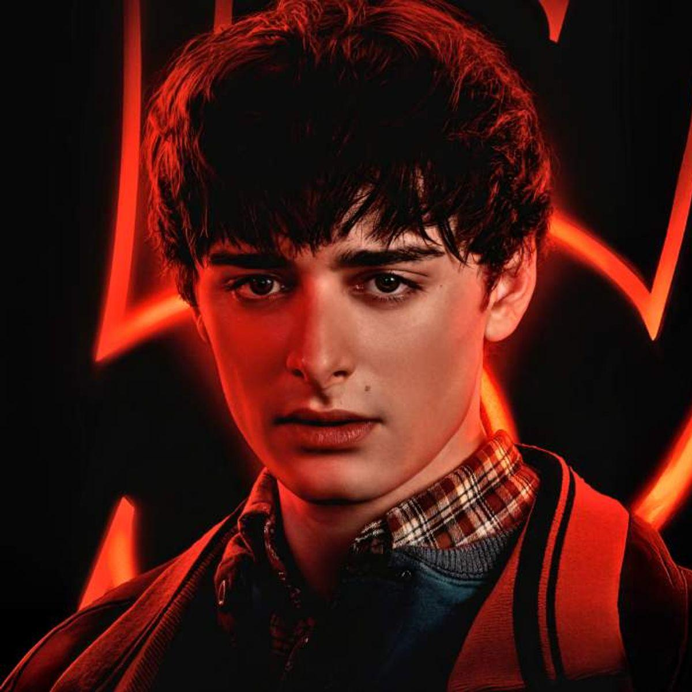

Em uma pequena cidade de Indiana, o desaparecimento de um garoto revela um mundo sombrio e sobrenatural, dando início a uma aventura envolvendo criaturas, mistérios e o Mundo Invertido.
SAIBA MAISGênero: Ficção científica, suspense e terror
Criadores: Matt Duffer e Ross Duffer
Ambientação: Hawkins, Indiana
Estreia: 2016

Sobre Stranger Things
Stranger Things é uma série de ficção científica, suspense e terror criada pelos irmãos Duffer. A história acontece na cidade fictícia de Hawkins, durante a década de 1980, onde acontecimentos misteriosos começam a mudar a vida de seus moradores.
Tudo começa quando Will Byers desaparece misteriosamente. Durante as buscas, seus amigos conhecem Eleven, uma garota com poderes sobrenaturais que os ajuda a investigar o desaparecimento e descobrir segredos escondidos na cidade.
Ao longo da série, os personagens descobrem o Mundo Invertido, uma dimensão sombria habitada por criaturas perigosas. Para proteger Hawkins, eles precisam enfrentar ameaças sobrenaturais e desvendar os mistérios que conectam esse lugar ao mundo real.
Além do suspense e da aventura, a série aborda temas como amizade, coragem e família. Sua ambientação nos anos 1980, com músicas, roupas e referências da época, também contribui para tornar Stranger Things uma produção marcante.
Personagens
Conheça os personagens

Eleven
Uma garota com poderes sobrenaturais que ajuda seus amigos a enfrentar os perigos de Hawkins.

Mike Wheeler
Um dos melhores amigos de Will e uma pessoa leal que está sempre ao lado do grupo.

Dustin Henderson
Inteligente, divertido e curioso, costuma ajudar o grupo a resolver mistérios.
Max Mayfield
Independente e corajosa, torna-se uma importante amiga do grupo de Hawkins.

Will Byers
Sensível e observador, seu desaparecimento revela a existência do Mundo Invertido.
Temporadas
| Temporada | Ano | Episódios | Vilão principal |
|---|---|---|---|
| 1ª | 2016 | 8 | Demogorgon |
| 2ª | 2017 | 9 | Devorador de Mentes |
| 3ª | 2019 | 8 | Devorador de Mentes |
| 4ª | 2022 | 9 | Vecna |
| 5ª | 2025 | 8 | Vecna e Mind Flayer |
Curiosidades
Principais acontecimentos
- O desaparecimento de Will Byers.
- A chegada de Eleven a Hawkins.
- A descoberta do Mundo Invertido.
- Os confrontos contra as criaturas sobrenaturais.
Você sabia?
- A série foi criada pelos irmãos Matt e Ross Duffer.
- A história se passa principalmente na cidade fictícia de Hawkins.
- O Mundo Invertido é uma das principais partes da história.
- A série possui referências à cultura dos anos 1980.
Entre no Mundo Invertido